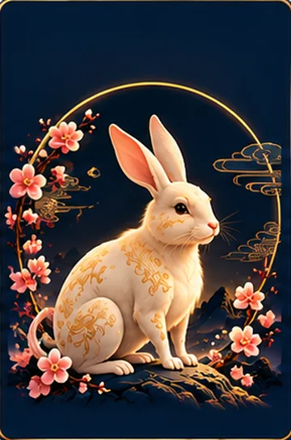
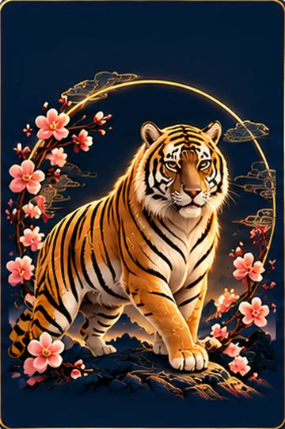

DISCOVER YOUR CHINESE ZODIAC
Discover Your Chinese Zodiac Sign
Today: November 1, 2026 (Cambodia time)Today's Number: 670
Uncover your personality, compatibility, lucky signs, and more based on your birth date.
- Personality Insights
- Love Compatibility
- Career Guidance
- Lucky Signs & Elements
វដ្តរាសី 12 ឆ្នាំ
ស្វែងយល់ពីរាសីឆ្នាំចិនរបស់អ្នក
ថ្ងៃនេះ: ថ្ងៃទី1 ខែវិច្ឆិកា ឆ្នាំ2026 (ម៉ោងកម្ពុជា)លេខថ្ងៃនេះ: 670
ស្វែងយល់ពីបុគ្គលិកលក្ខណៈ ភាពត្រូវគ្នា សំណាង និងព័ត៌មានផ្សេងៗ តាមថ្ងៃ ខែ ឆ្នាំកំណើតរបស់អ្នក។
- ការយល់ដឹងអំពីបុគ្គលិកលក្ខណៈ
- ភាពត្រូវគ្នាក្នុងស្នេហា
- ការណែនាំអាជីព
- សំណាង និងធាតុ
十二生肖周期
了解你的中国生肖
今天：2026年11月1日 （柬埔寨时间）今日数字：670
根据你的出生日期，了解你的性格、配对、幸运象征等。
- 性格解读
- 爱情配对
- 事业指引
- 幸运象征与五行
From the MyBirthSign Blog
Guides to the Chinese zodiac, the Khmer calendar and Cambodian traditions.

Khmer Lunar Calendar
How waxing and waning moon days are counted, and how to find your Khmer lunar birth date.Read guide →
Kathen: Robe-Offering Season
Why Cambodians offer robes to monks after Buddhist Lent, and the 2026 season dates.Read guide →
The Wood Element
Spring, growth and new beginnings. Every Wood year from 1944 to 2035.Read guide →
The Fire Element
Summer, warmth and energy. 2026 and 2027 are both Fire years.Read guide →
The Earth Element
The steady centre of the five elements. Every Earth year and its meaning.Read guide →
The Metal Element
Autumn, clarity and strength. Every Metal year and its meaning.Read guide →
The Water Element
Winter, depth and calm. Every Water year and its meaning.Read guide →
Zodiac Clashes Explained
The six opposite pairs, and why one sign takes it easy every day.Read guide →
How the Day's Animal Is Found
The ancient day cycle, and how to find the animal of any date.Read guide →
The 12 Zodiac Hours
Which animal rules each two-hour period, from the Rat hour at 23:00.Read guide →
Chinese New Year 2027
The Year of the Goat begins on 6 February 2027. Who counts as a Goat.Read guide →
Khmer New Year & the Animal Year
When the Khmer animal year really changes, and why it is a different day from Chinese New Year.Read guide →
Lucky Days to Open a Business
How Cambodian families choose an opening day, which days to avoid, and a 30-day finder for your sign.Read guide →
Chol Vassa: Buddhist Lent
The three-month rains retreat: 2026 dates (30 Jul – 26 Oct), why the date moves, family customs, and a date checker.Read guide →
Cambodian Buddhist Holy Days
Thngai Sil, the four holy days of every lunar month, the great full-moon festivals and a month-by-month guide with this year's dates.Read guide →
Cambodian Public Holidays 2026
All 15 official holidays (22 days off), what each one marks, and the expected 2027 dates of the moving ones.Read guide →
Khmer Animal Year and Sak
The four counts in a Khmer year name, the ten Sak, year names 2024–2035 and a date checker.Read guide →
Khmer Leap Months and Leap Days
Why some Khmer years have 384 days, why 2026 had two Asadh months, and a leap-year checker.Read guide →
2026 Fire Horse Year
The year runs 17 Feb 2026 to 5 Feb 2027. How each sign relates to it, and what your element adds.Read guide →
Compatibility Guide
The four triangles, the six harmony pairs and the six clashes, with a 12 × 12 chart of every pairing.Read guide →
Zodiac Personality
All 12 signs on one page: years, strengths, challenges, best matches and typical careers.Read guide →
Five Elements
Wood, Fire, Earth, Metal and Water: what each means, how to find yours from the year, and how they interact.Read guide →
Calculate Your Sign
Why January and February birthdays can belong to the previous year, with worked examples.Read guide →
Love Compatibility
Compare two birth dates. The tool scores the signs, elements and Yin and Yang, and explains each part.Read guide →

Today's Chinese Zodiac Fortune
Discover your luck, opportunities, and advice for today. See how the 12 zodiac signs are influenced in love, career, money, and relationships. Read Today's Fortune →A quick look at how the day treats each of the 12 signs. Tap any card to see that animal's years and profile.
- Rat
Ordinary day
Routine tasks — nothing special pulling for or against you today.
Year of the Rat → - Ox
Ordinary day
Routine tasks — nothing special pulling for or against you today.
Year of the Ox → - Tiger
Ordinary day
Routine tasks — nothing special pulling for or against you today.
Year of the Tiger → - Rabbit
Great day
Big decisions, bold moves, saying what's on your mind.
Year of the Rabbit → - Dragon
Ordinary day
Routine tasks — nothing special pulling for or against you today.
Year of the Dragon → - Snake
Ordinary day
Routine tasks — nothing special pulling for or against you today.
Year of the Snake → - Horse
Ordinary day
Routine tasks — nothing special pulling for or against you today.
Year of the Horse → - Goat
Good day
Steady follow-through on something already in motion.
Year of the Goat → - Monkey
Ordinary day
Routine tasks — nothing special pulling for or against you today.
Year of the Monkey → - Rooster
Take it easy
Low-key tasks only. Worth skipping anything high-stakes if you can.
Year of the Rooster → - Dog
Ordinary day
Routine tasks — nothing special pulling for or against you today.
Year of the Dog → - Pig
Good day
Steady follow-through on something already in motion.
Year of the Pig →
For entertainment and self-reflection only. Daily ratings are based on traditional Chinese zodiac day relationships and are not scientific predictions. Lucky numbers (1 to 5 digits) change every day, Cambodia time, and are for fun only, not betting advice.
Khmer Lunar Calendar
How waxing and waning moon days are counted, and how to find your Khmer lunar birth date.
Read the guide →Explore the 12 Chinese Zodiac Animals
Choose an animal to learn about its personality, years, elements, lucky signs and compatibility.
Explore MyBirthSign Tools
Chinese Zodiac Compatibility
See how two birth dates traditionally match in love, friendship, and business.
Check Compatibility →Wedding Date Picker
Explore traditionally favorable wedding months based on both zodiac signs.
Find a Good Date →Business Partner Match
Compare two birth dates for traditional Chinese zodiac business compatibility.
Check Business Match →Zodiac Guide
Learn about the 12 animals, elements, lucky signs and more.
Explore Guide →
ពីប្លុករបស់ MyBirthSign
មគ្គុទ្ទេសក៍អំពីរាសីចិន ប្រតិទិនខ្មែរ និងប្រពៃណីកម្ពុជា។
ប្រតិទិនចន្ទគតិខ្មែរ
ស្វែងយល់ពីថ្ងៃកើត និងរោច ហើយរកថ្ងៃខែកំណើតតាមចន្ទគតិរបស់អ្នក។អានមគ្គុទ្ទេសក៍ →
ពិធីបុណ្យកឋិនទាន
ហេតុអ្វីពុទ្ធបរិស័ទវេរចីវរប្រគេនព្រះសង្ឃក្រោយចេញព្រះវស្សា និងកាលបរិច្ឆេទឆ្នាំ 2026។អានមគ្គុទ្ទេសក៍ →ចូលឆ្នាំខ្មែរ និងឆ្នាំសត្វ
ពេលណាឆ្នាំសត្វខ្មែរពិតជាប្តូរ និងហេតុអ្វីវាខុសពីថ្ងៃចូលឆ្នាំចិន។អានមគ្គុទ្ទេសក៍ →ថ្ងៃល្អសម្រាប់បើកហាង
របៀបដែលគ្រួសារខ្មែរជ្រើសរើសថ្ងៃបើកហាង ថ្ងៃដែលត្រូវជៀសវាង និងឧបករណ៍ស្វែងរកថ្ងៃល្អ30ថ្ងៃ។អានមគ្គុទ្ទេសក៍ →ចូលព្រះវស្សា
ការគង់ចាំវស្សាបីខែ៖ កាលបរិច្ឆេទឆ្នាំ 2026 (30 កក្កដា – 26 តុលា) ហេតុអ្វីថ្ងៃប្រែប្រួល ទំនៀមគ្រួសារ និងឧបករណ៍ពិនិត្យថ្ងៃ។អានមគ្គុទ្ទេសក៍ →ថ្ងៃសីល និងបុណ្យព្រះពុទ្ធសាសនា
ថ្ងៃសីលបួនថ្ងៃក្នុងខែចន្ទគតិនីមួយៗ ពិធីបុណ្យពេញបូណ៌មីធំៗ និងមគ្គុទ្ទេសក៍តាមខែ ព្រមទាំងកាលបរិច្ឆេទឆ្នាំនេះ។អានមគ្គុទ្ទេសក៍ →ថ្ងៃឈប់សម្រាកផ្លូវការ ឆ្នាំ 2026
ថ្ងៃបុណ្យផ្លូវការទាំង 15 (ឈប់ 22 ថ្ងៃ) អត្ថន័យនៃថ្ងៃនីមួយៗ និងកាលបរិច្ឆេទរំពឹងទុកឆ្នាំ 2027 នៃថ្ងៃដែលប្រែប្រួល។អានមគ្គុទ្ទេសក៍ →ឆ្នាំសត្វ និងស័ក
ការរាប់ឆ្នាំបួនយ៉ាងក្នុងឈ្មោះឆ្នាំខ្មែរ ស័កទាំងដប់ ឈ្មោះឆ្នាំ 2024–2035 និងឧបករណ៍ពិនិត្យថ្ងៃ។អានមគ្គុទ្ទេសក៍ →អធិកមាស និងចន្ទ្រាធិមាស
ហេតុអ្វីឆ្នាំខ្មែរខ្លះមាន 384 ថ្ងៃ ហេតុអ្វីឆ្នាំ 2026 មានខែអាសាឍពីរ និងឧបករណ៍ពិនិត្យឆ្នាំ។អានមគ្គុទ្ទេសក៍ →ឆ្នាំមមីភ្លើង 2026
ឆ្នាំនេះចាប់ពី 17 កុម្ភៈ 2026 ដល់ 5 កុម្ភៈ 2027។ របៀបដែលរាសីនីមួយៗទាក់ទងនឹងវា និងអ្វីដែលធាតុរបស់អ្នកបន្ថែម។អានមគ្គុទ្ទេសក៍ →មគ្គុទ្ទេសក៍ភាពសមស្រប
ក្រុមបីទាំងបួន គូចុះសម្រុងទាំងប្រាំមួយ និងការប៉ះទង្គិចទាំងប្រាំមួយ ជាមួយតារាង 12 × 12 នៃគូទាំងអស់។អានមគ្គុទ្ទេសក៍ →បុគ្គលិកលក្ខណៈនិមិត្តសញ្ញា
រាសីទាំង 12 នៅលើទំព័រតែមួយ៖ ឆ្នាំ ចំណុចខ្លាំង បញ្ហាប្រឈម គូល្អបំផុត និងមុខរបរដែលសម។អានមគ្គុទ្ទេសក៍ →ធាតុទាំងប្រាំ
ស្វែងយល់ពីរបៀបដែលធាតុទាំងប្រាំជះឥទ្ធិពលលើនិមិត្តសញ្ញារបស់អ្នក។អានមគ្គុទ្ទេសក៍ →គណនានិមិត្តសញ្ញារបស់អ្នក
ហេតុអ្វីបានជាថ្ងៃកំណើតក្នុងខែមករា និងកុម្ភៈ អាចជារបស់ឆ្នាំមុន ជាមួយឧទាហរណ៍។អានមគ្គុទ្ទេសក៍ →ភាពសមស្របក្នុងស្នេហា
ប្រៀបធៀបថ្ងៃកំណើតពីរ។ ឧបករណ៍គិតពិន្ទុសត្វ ធាតុ និងយិន-យ៉ាង ហើយពន្យល់ផ្នែកនីមួយៗ។អានមគ្គុទ្ទេសក៍ →
ជោគជតារាសីប្រចាំថ្ងៃនេះ
ស្វែងយល់អំពីសំណាង ឱកាស និងដំបូន្មានសម្រាប់ថ្ងៃនេះ។ មើលថាសត្វរាសីទាំង 12 ត្រូវបានជះឥទ្ធិពលយ៉ាងណាលើស្នេហា មុខរបរ ប្រាក់កាស និងទំនាក់ទំនង។ អានជោគជតាថ្ងៃនេះ →មើលរហ័សថាថ្ងៃនេះប្រព្រឹត្តចំពោះសត្វរាសីទាំង 12 យ៉ាងណា។ ចុចលើកាតណាមួយ ដើម្បីមើលឆ្នាំ និងព័ត៌មានរបស់សត្វនោះ។
- ជូត
ថ្ងៃធម្មតា
កិច្ចការប្រចាំថ្ងៃ — គ្មានអ្វីពិសេសគាំទ្រ ឬប្រឆាំងនឹងអ្នកថ្ងៃនេះទេ។
ឆ្នាំជូត → - ឆ្លូវ
ថ្ងៃធម្មតា
កិច្ចការប្រចាំថ្ងៃ — គ្មានអ្វីពិសេសគាំទ្រ ឬប្រឆាំងនឹងអ្នកថ្ងៃនេះទេ។
ឆ្នាំឆ្លូវ → - ខាល
ថ្ងៃធម្មតា
កិច្ចការប្រចាំថ្ងៃ — គ្មានអ្វីពិសេសគាំទ្រ ឬប្រឆាំងនឹងអ្នកថ្ងៃនេះទេ។
ឆ្នាំខាល → - ថោះ
ថ្ងៃល្អខ្លាំង
ការសម្រេចចិត្តធំៗ ការផ្លាស់ប្តូរយ៉ាងក្លាហាន និងការនិយាយអ្វីដែលគិតក្នុងចិត្ត។
ឆ្នាំថោះ → - រោង
ថ្ងៃធម្មតា
កិច្ចការប្រចាំថ្ងៃ — គ្មានអ្វីពិសេសគាំទ្រ ឬប្រឆាំងនឹងអ្នកថ្ងៃនេះទេ។
ឆ្នាំរោង → - ម្សាញ់
ថ្ងៃធម្មតា
កិច្ចការប្រចាំថ្ងៃ — គ្មានអ្វីពិសេសគាំទ្រ ឬប្រឆាំងនឹងអ្នកថ្ងៃនេះទេ។
ឆ្នាំម្សាញ់ → - មមី
ថ្ងៃធម្មតា
កិច្ចការប្រចាំថ្ងៃ — គ្មានអ្វីពិសេសគាំទ្រ ឬប្រឆាំងនឹងអ្នកថ្ងៃនេះទេ។
ឆ្នាំមមី → - មមែ
ថ្ងៃល្អ
ការបន្តធ្វើកិច្ចការដែលកំពុងដំណើរការស្រាប់ដោយស្ថិរភាព។
ឆ្នាំមមែ → - វក
ថ្ងៃធម្មតា
កិច្ចការប្រចាំថ្ងៃ — គ្មានអ្វីពិសេសគាំទ្រ ឬប្រឆាំងនឹងអ្នកថ្ងៃនេះទេ។
ឆ្នាំវក → - រកា
ថ្ងៃគួរប្រុងប្រយ័ត្ន
កិច្ចការស្រាលៗប៉ុណ្ណោះ។ ប្រសិនបើអាច គួរជៀសវាងការសម្រេចចិត្តសំខាន់ៗ។
ឆ្នាំរកា → - ច
ថ្ងៃធម្មតា
កិច្ចការប្រចាំថ្ងៃ — គ្មានអ្វីពិសេសគាំទ្រ ឬប្រឆាំងនឹងអ្នកថ្ងៃនេះទេ។
ឆ្នាំច → - កុរ
ថ្ងៃល្អ
ការបន្តធ្វើកិច្ចការដែលកំពុងដំណើរការស្រាប់ដោយស្ថិរភាព។
ឆ្នាំកុរ →
សម្រាប់ការកំសាន្ត និងការឆ្លុះបញ្ចាំងខ្លួនប៉ុណ្ណោះ។ ការវាយតម្លៃប្រចាំថ្ងៃផ្អែកលើទំនាក់ទំនងថ្ងៃ-សត្វរាសីតាមប្រពៃណី ហើយមិនមែនជាការព្យាករណ៍វិទ្យាសាស្ត្រទេ។ លេខសំណាង (1 ដល់ 5 ខ្ទង់) ប្តូររៀងរាល់ថ្ងៃ តាមម៉ោងកម្ពុជា ហើយសម្រាប់ការកម្សាន្តប៉ុណ្ណោះ មិនមែនជាការណែនាំឱ្យភ្នាល់ទេ។
ប្រតិទិនចន្ទគតិខ្មែរ
ស្វែងយល់ពីថ្ងៃកើត និងរោច ហើយរកថ្ងៃខែកំណើតតាមចន្ទគតិរបស់អ្នក។
អានមគ្គុទ្ទេសក៍ →ស្វែងយល់សត្វរាសីទាំង 12
ជ្រើសរើសសត្វមួយ ដើម្បីស្វែងយល់អំពីបុគ្គលិកលក្ខណៈ ឆ្នាំកំណើត ធាតុ សំណាង និងភាពត្រូវគ្នា។
ឧបករណ៍របស់ MyBirthSign
ភាពត្រូវគ្នានៃរាសី
មើលថាតើថ្ងៃកំណើតពីរត្រូវគ្នាតាមប្រពៃណីយ៉ាងណាក្នុងស្នេហា មិត្តភាព និងអាជីវកម្ម។
គូស្រករ →ជ្រើសរើសថ្ងៃរៀបការ
ស្វែងរកខែមង្គលតាមប្រពៃណី ដោយផ្អែកលើរាសីទាំងពីរ។
ស្វែងរកថ្ងៃល្អ →ភាពសមស្របដៃគូអាជីវកម្ម
ប្រៀបធៀបថ្ងៃកំណើតពីរ សម្រាប់ភាពសមស្របក្នុងអាជីវកម្មតាមប្រពៃណី។
ពិនិត្យភាពសមស្របអាជីវកម្ម →មគ្គុទ្ទេសក៍រាសី
ស្វែងយល់អំពីសត្វទាំង 12 ធាតុ សំណាង និងច្រើនទៀត។
ស្វែងយល់មគ្គុទ្ទេសក៍ →
MyBirthSign 博客
关于中国生肖、高棉历法和柬埔寨传统的指南。
高棉农历
上弦日和下弦日如何计算，以及如何查找你的高棉农历生日。阅读指南 →高棉新年与生肖年
高棉生肖年究竟何时更换，以及为什么和农历新年不是同一天。阅读指南 →开业吉日
柬埔寨家庭如何选择开业日、要避开哪些日子，以及适合你生肖的30天吉日查询。阅读指南 →入雨安居：佛教守夏节
为期三个月的雨季安居：2026年日期（7月30日至10月26日）、日期为何变化、家庭习俗，以及日期查询。阅读指南 →柬埔寨佛教斋日与节日
每个农历月的四个斋日、重大满月节日，以及附有今年日期的逐月指南。阅读指南 →2026年柬埔寨公共假期
全部15个官方假期（共22天）、每个假期的意义，以及会变动的假期在2027年的预计日期。阅读指南 →高棉生肖年与 Sak 纪年
高棉年份名称中的四种纪年、十个 Sak、2024–2035年的年份名称和日期查询。阅读指南 →高棉历的闰月与闰日
为什么有些高棉年有384天、为什么2026年有两个 Asadh 月，以及闰年查询。阅读指南 →2026丙午火马年
这一年从2026年2月17日到2027年2月5日。各生肖与它的关系，以及你的五行有什么影响。阅读指南 →配对指南
四组三合、六组六合与六组六冲，并附12×12的完整配对表。阅读指南 →生肖性格
一页看完十二生肖：年份、优点、挑战、最佳配对和常见职业。阅读指南 →五行
木、火、土、金、水各代表什么，如何从年份找出你的五行，以及它们如何相生相克。阅读指南 →推算你的生肖
为什么1月和2月出生的人可能属于上一年的生肖，附实际例子。阅读指南 →爱情配对
比较两个生日。工具会为生肖、五行和阴阳打分，并逐项说明。阅读指南 →
今日生肖运势
了解你今天的运气、机会和建议。看看十二生肖今天在爱情、事业、财运和人际关系方面受到怎样的影响。 阅读今日运势 →快速看看今天对十二生肖各有什么影响。 点按任意卡片，查看该生肖的年份和介绍。
- 鼠
平
处理日常事务——今天没有特别的助力或阻力。
鼠年 → - 牛
平
处理日常事务——今天没有特别的助力或阻力。
牛年 → - 虎
平
处理日常事务——今天没有特别的助力或阻力。
虎年 → - 兔
大吉
适合做大决定、大胆行动、说出心里话。
兔年 → - 龙
平
处理日常事务——今天没有特别的助力或阻力。
龙年 → - 蛇
平
处理日常事务——今天没有特别的助力或阻力。
蛇年 → - 马
平
处理日常事务——今天没有特别的助力或阻力。
马年 → - 羊
吉
稳步推进已经在进行中的事情。
羊年 → - 猴
平
处理日常事务——今天没有特别的助力或阻力。
猴年 → - 鸡
宜小心
只做轻松的事。可以的话，避开任何重大决定。
鸡年 → - 狗
平
处理日常事务——今天没有特别的助力或阻力。
狗年 → - 猪
吉
稳步推进已经在进行中的事情。
猪年 →
仅供娱乐与自我反思。每日评分基于传统中国生肖的日辰关系，并非科学预测。 幸运数字（1 至 5 位数）每天按柬埔寨时间更新，仅供娱乐，不是投注建议。
高棉农历
了解上弦和下弦的日子怎么计算，以及如何找到你的高棉农历生日。
阅读指南 →探索十二生肖
选择一个生肖，了解它的性格、年份、五行、幸运象征和配对。
MyBirthSign 工具
Chinese Zodiac Compatibilityភាពត្រូវគ្នានៃរាសី中国生肖配对
Compare two birthdays to discover traditional zodiac compatibility in love, friendship, business and more.ប្រៀបធៀបថ្ងៃកំណើតពីរ ដើម្បីស្វែងយល់ភាពត្រូវគ្នាតាមប្រពៃណីក្នុងស្នេហា មិត្តភាព អាជីវកម្ម និងច្រើនទៀត។比较两个生日，了解在爱情、友情、事业等方面的传统生肖配对。
Traditional compatibility is for entertainment and cultural interest, not a prediction of how a relationship will go.ភាពត្រូវគ្នាតាមប្រពៃណីសម្រាប់ការកំសាន្ត និងវប្បធម៌ប៉ុណ្ណោះ មិនមែនជាការព្យាករណ៍ពីទំនាក់ទំនងទេ។传统配对仅供娱乐和文化兴趣，不能预测一段关系会如何发展。
Why Choose MyBirthSign?
Traditional Chinese zodiac interpretation, made simple.
Accurate Zodiac Calculation
Based on Lunar New Year boundaries and Chinese zodiac traditions.
Detailed Personality Insights
Learn about strengths, challenges and traditional traits.
Love & Relationship Guidance
Explore traditional zodiac compatibility.
Career & Business Compatibility
Compare traditional zodiac strengths.
Easy to Use
Simple tools designed for quick answers.
How MyBirthSign Works
- Enter Your Birth Date
- Discover Your Zodiac Animal
- Explore Your Element
- Discover Compatibility & Guidance
Chinese zodiac signs follow a traditional 12-year cycle. Because the zodiac year follows the Lunar New Year calendar, people born in January or February should check their exact birth date.
Your birth year maps to one of 12 zodiac animals and one of 5 elements, following the traditional East Asian zodiac cycle. The animal reflects personality traits that are said to repeat every 12 years, while the element adds a layer of flavor that repeats every 10 years — together giving a unique 60-year combination (for example, "Earth Dragon" or "Water Tiger").
Check My Zodiac →How the 12-Year Zodiac Cycle Works
The zodiac repeats every 12 years.
Your birth year determines the traditional zodiac animal, but people born around January or February should check the Lunar New Year boundary.
Rat → Ox → Tiger → Rabbit → Dragon → Snake → Horse → Goat → Monkey → Rooster → Dog → Pig → Rat
Check Your Zodiac →The Five Chinese Zodiac Elements
- Wood
- Fire
- Earth
- Metal
- Water
The five elements add another layer to the traditional zodiac system.
Explore Chinese Zodiac Elements →Recent Daily Fortunes
Chinese Zodiac Daily Fortune — November 1, 2026
Today's Chinese zodiac fortune for all 12 animals, with the best signs of the day and signs needing extra care.
Read More →
Chinese Zodiac Daily Fortune — October 31, 2026
Today's Chinese zodiac fortune for all 12 animals, with the best signs of the day and signs needing extra care.
Read More →
Chinese Zodiac Daily Fortune — October 30, 2026
Today's Chinese zodiac fortune for all 12 animals, with the best signs of the day and signs needing extra care.
Read More →
Your Journey with the Stars
Explore the wisdom of the Chinese zodiac and discover more about love, career, compatibility, and harmony.
Start Your Zodiac Journey →ហេតុអ្វីជ្រើសរើស MyBirthSign?
ការបកស្រាយរាសីតាមប្រពៃណី ធ្វើឱ្យងាយស្រួល។
ការគណនារាសីត្រឹមត្រូវ
ផ្អែកលើព្រំដែនចូលឆ្នាំចន្ទគតិ និងប្រពៃណីរាសី។
ការយល់ដឹងលម្អិតអំពីបុគ្គលិកលក្ខណៈ
ស្វែងយល់អំពីចំណុចខ្លាំង ឧបសគ្គ និងលក្ខណៈតាមប្រពៃណី។
ការណែនាំស្នេហា និងទំនាក់ទំនង
ស្វែងយល់ភាពត្រូវគ្នាតាមប្រពៃណី។
ភាពសមស្របការងារ និងអាជីវកម្ម
ប្រៀបធៀបចំណុចខ្លាំងតាមប្រពៃណី។
ងាយស្រួលប្រើ
ឧបករណ៍សាមញ្ញ សម្រាប់ចម្លើយរហ័ស។
របៀបដែល MyBirthSign ដំណើរការ
- បញ្ចូលថ្ងៃកំណើតរបស់អ្នក
- ស្វែងរកសត្វរាសីរបស់អ្នក
- ស្វែងយល់ធាតុរបស់អ្នក
- ស្វែងយល់ភាពត្រូវគ្នា និងការណែនាំ
រាសីវិលជុំតាមវដ្ត 12ឆ្នាំ។ ដោយសារឆ្នាំរាសីតាមប្រតិទិនចូលឆ្នាំចន្ទគតិ អ្នកដែលកើតក្នុងខែមករា ឬកុម្ភៈ គួរពិនិត្យថ្ងៃកំណើតជាក់លាក់របស់ខ្លួន។
ឆ្នាំកំណើតរបស់អ្នកត្រូវនឹងសត្វនិមិត្តសញ្ញាមួយក្នុងចំណោម12 និងធាតុមួយក្នុងចំណោម5 ដោយដើរតាមវដ្តនិមិត្តសញ្ញាអាស៊ីបូព៌ាបែបប្រពៃណី។ សត្វនិមិត្តសញ្ញាបង្ហាញពីគុណសម្បត្តិបុគ្គលិកលក្ខណៈដែលគេនិយាយថាវិលត្រឡប់មកវិញរៀងរាល់12ឆ្នាំ ចំណែកធាតុបន្ថែមស្រទាប់រស់ជាតិដែលវិលត្រឡប់មកវិញរៀងរាល់10ឆ្នាំ — រួមគ្នាផ្តល់ជាការផ្សំពិសេសមួយរយៈពេល60ឆ្នាំ (ឧទាហរណ៍ "រោងដី" ឬ "ខាលទឹក")។
ពិនិត្យរាសីរបស់ខ្ញុំ →របៀបដែលវដ្តរាសី12ឆ្នាំដំណើរការ
រាសីវិលជុំរៀងរាល់ 12ឆ្នាំម្តង។
ឆ្នាំកំណើតរបស់អ្នកកំណត់សត្វរាសីតាមប្រពៃណី ប៉ុន្តែអ្នកដែលកើតក្នុងខែមករា ឬកុម្ភៈ គួរពិនិត្យថ្ងៃចូលឆ្នាំចន្ទគតិ។
ជូត → ឆ្លូវ → ខាល → ថោះ → រោង → ម្សាញ់ → មមី → មមែ → វក → រកា → ច → កុរ → ជូត
ពិនិត្យរាសីរបស់អ្នក →ធាតុទាំងប្រាំនៃរាសី
- ឈើ
- ភ្លើង
- ដី
- លោហធាតុ
- ទឹក
ធាតុទាំងប្រាំបន្ថែមស្រទាប់មួយទៀតដល់ប្រព័ន្ធរាសីតាមប្រពៃណី។
ស្វែងយល់ធាតុទាំងប្រាំ →ជោគជតារាសីប្រចាំថ្ងៃថ្មីៗ
ជោគជតារាសីប្រចាំថ្ងៃ — ថ្ងៃទី1 ខែវិច្ឆិកា ឆ្នាំ2026
ជោគជតារាសីថ្ងៃនេះសម្រាប់សត្វទាំង 12 រួមទាំងសត្វដែលសំណាងល្អបំផុត និងសត្វដែលត្រូវប្រុងប្រយ័ត្ន។
អានបន្ថែម →ជោគជតារាសីប្រចាំថ្ងៃ — ថ្ងៃទី31 ខែតុលា ឆ្នាំ2026
ជោគជតារាសីថ្ងៃនេះសម្រាប់សត្វទាំង 12 រួមទាំងសត្វដែលសំណាងល្អបំផុត និងសត្វដែលត្រូវប្រុងប្រយ័ត្ន។
អានបន្ថែម →ជោគជតារាសីប្រចាំថ្ងៃ — ថ្ងៃទី30 ខែតុលា ឆ្នាំ2026
ជោគជតារាសីថ្ងៃនេះសម្រាប់សត្វទាំង 12 រួមទាំងសត្វដែលសំណាងល្អបំផុត និងសត្វដែលត្រូវប្រុងប្រយ័ត្ន។
អានបន្ថែម →
ដំណើររបស់អ្នកជាមួយផ្កាយ
ស្វែងយល់ប្រាជ្ញារាសី ហើយស្គាល់បន្ថែមអំពីស្នេហា អាជីព ភាពត្រូវគ្នា និងសុខដុមរមនា។
ចាប់ផ្តើមដំណើររាសីរបស់អ្នក →为什么选择 MyBirthSign？
简单易懂的传统中国生肖解读。
准确的生肖计算
以农历新年为分界，遵循中国生肖传统。
详细的性格解读
了解优点、挑战和传统特点。
爱情与关系指引
探索传统生肖配对。
事业与商业配对
比较传统生肖优势。
简单易用
简单的工具，快速得到答案。
MyBirthSign 如何运作
- 输入你的出生日期
- 找到你的生肖
- 了解你的五行
- 查看配对与指引
中国生肖遵循传统的 12 年周期。由于生肖年以农历新年为准，1 月或 2 月出生的人应该查看自己的确切出生日期。
按照传统的东亚生肖周期，你的出生年份对应十二生肖之一和五行之一。生肖代表据说每 12 年重复一次的性格特点，五行则每 10 年重复一次，为性格增添另一层色彩——两者组合成独特的 60 年周期（例如“土龙”或“水虎”）。
查询我的生肖 →十二年生肖循环如何运作
生肖每12年循环一次。
你的出生年份决定传统上的生肖，但1月或2月前后出生的人应核对农历新年的分界。
鼠 → 牛 → 虎 → 兔 → 龙 → 蛇 → 马 → 羊 → 猴 → 鸡 → 狗 → 猪 → 鼠
查询你的生肖 →生肖五行
- 木
- 火
- 土
- 金
- 水
五行为传统生肖体系增添了另一层含义。
了解生肖五行 →